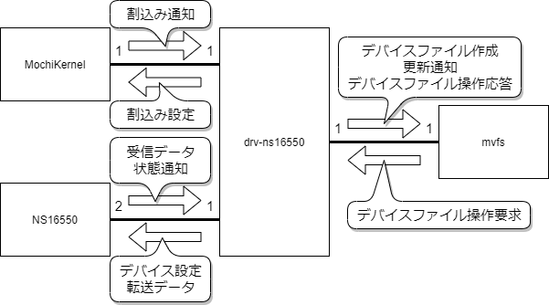

概要
mvfs
仮想ファイルサーバ。ファイルシステムインタフェースを提供する。
mtty
ttyサーバ。ttyファイルを経由してターミナル入出力機能を提供する。
drv-ns16550は、NS16550若しくはNS16550互換のシリアルポートデバイスのドライバである。mttyなどのシリアルポートを使用するサーバに対しmvfsを用いて下記のデバイスファイルを提供し、デバイスファイル経由でシリアルポートデバイス入出力を可能にする。
| デバイスファイル | デバイス |
| /serial1 | シリアルポート1(COM1) |
| /serial2 | シリアルポート2(COM2) |
機能モデル図を下記に示す。

drv-ns16550は起動時に2つのNS16550若しくはその互換デバイスを初期化して利用可能な状態に設定しMochiKernelにデバイスの割込み設定を行って、デバイスからの割込みとmvfsからのデバイスファイル操作要求を待ち受ける。デバイスがデータを受信、または、デバイスの転送バッファが空になった時の割り込みを受け付けて、drv-ns16550内に持つバッファを用いてデータの入出力を行う。mvfsからファイル書込み要求、または、ファイル読込み要求時は同様にバッファを用いてデータの入出力を行う。